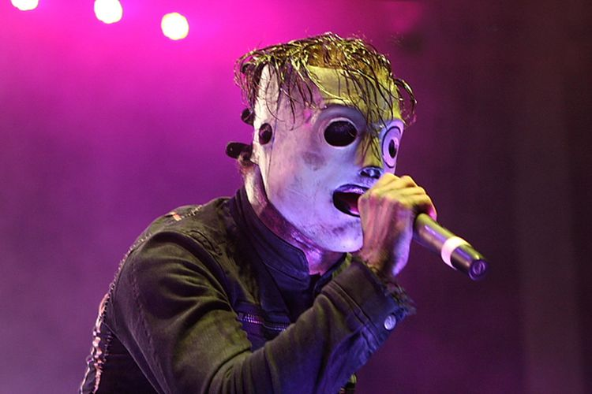

Shawn CrahanMichael Shawn Crahan (born September 24, 1969), more commonly known by his stage persona "Clown", is an American musician who is one of the two percussionists/background vocalists and co-founder of heavy metal band Slipknot. |
Chris FehnChristopher Michael Fehn (born February 24, 1973), or known by his number #3, is an American musician, songwriter and percussionist. He was one of three percussionists for American heavy metal band Slipknot along with Joey Jordison and Shawn Crahan. He was also the bassist for Will Haven. |
Paul GrayPaul Dedrick Gray (April 8, 1972 – May 24, 2010) also known as the Pig or by his number #2, was an American musician best known as bassist, backing vocalist, main songwriter and one of the founding members of the heavy metal band Slipknot. |

Corey TaylorCorey Todd Taylor (born December 8, 1973) is an American singer, musician, songwriter and actor. He is known as the lead vocalist and lyricist of the bands Slipknot and Stone Sour. |
Sid WilsonSidney George Wilson III (born January 20, 1977),[1] also known as DJ Starscream or #0, is an American DJ, keyboardist, rapper and pianist, best known as the turntablist of the Grammy Award-winning heavy metal band Slipknot. |
Joey JordisonNathan Jonas Jordison (April 26, 1975 – July 26, 2021) was an American musician and songwriter. He was the original drummer and co-founder of the American heavy metal band Slipknot as well as the guitarist for the American horror punk supergroup Murderdolls. |
James RootJames Donald Root[1] (born October 2, 1971),[2][3] also known as #4, is an American guitarist and songwriter. He is one of two guitarists for heavy metal band Slipknot and the former lead guitarist for rock band Stone Sour. |
Mick ThomsonMickael Gordon Thomson (born November 3, 1973) is an American guitarist and musician. He is one of two guitarists for the American heavy metal band Slipknot, in which he is designated #7. |
Craig JonesCraig Michael Jones (born February 11, 1972),[1][2] also known as 133, #5 or Craig "133" Jones is an American musician, best known as the sampler and keyboardist for the metal band Slipknot, Jones joined the band in 1996. |